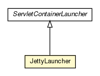

hu.sch.kfc.dev
Class JettyLauncher

java.lang.Object
 com.google.gwt.core.ext.ServletContainerLauncher
hu.sch.kfc.dev.JettyLauncher
com.google.gwt.core.ext.ServletContainerLauncher
hu.sch.kfc.dev.JettyLauncher
public class JettyLauncher
- extends com.google.gwt.core.ext.ServletContainerLauncher
A ServletContainerLauncher for an embedded Jetty server.
Azért kellett ezt módosítani, hogy beolvassa a jetty-env.xml-et és a többi finomságot ha kell, a
verzió alapján lehet látni, hogy melyik Launcher lett átírva, ha verzió-frissítés történik akkor
célszerű egy újat leszedni és abban is megszerkeszteni, amit kell, lásd:
http://groups.google.com/group/Google-Web-Toolkit/browse_thread/thread/3f5369b0aea1a265
Illetve ne felejtsd el az alábbi két property-t:
java.naming.factory.url.pkgs=org.eclipse.jetty.jndi
java.naming.factory.initial=org.eclipse.jetty.jndi.InitialContextFactory
- Version:
- 2.1.0.M3
|
Method Summary |
protected JettyLauncher.JettyServletContainer |
createServletContainer(com.google.gwt.core.ext.TreeLogger logger,
java.io.File appRootDir,
org.mortbay.jetty.Server server,
org.mortbay.jetty.webapp.WebAppContext wac,
int localPort)
|
protected org.mortbay.jetty.webapp.WebAppContext |
createWebAppContext(com.google.gwt.core.ext.TreeLogger logger,
java.io.File appRootDir)
|
protected org.mortbay.jetty.AbstractConnector |
getConnector()
|
java.lang.String |
getName()
|
void |
setBaseRequestLogLevel(com.google.gwt.core.ext.TreeLogger.Type baseLogLevel)
|
void |
setBindAddress(java.lang.String bindAddress)
|
com.google.gwt.core.ext.ServletContainer |
start(com.google.gwt.core.ext.TreeLogger logger,
int port,
java.io.File appRootDir)
|
| Methods inherited from class com.google.gwt.core.ext.ServletContainerLauncher |
getIconBytes, getIconPath, processArguments |
| Methods inherited from class java.lang.Object |
clone, equals, finalize, getClass, hashCode, notify, notifyAll, toString, wait, wait, wait |
JettyLauncher
public JettyLauncher()
getName
public java.lang.String getName()
- Overrides:
getName in class com.google.gwt.core.ext.ServletContainerLauncher
setBaseRequestLogLevel
public void setBaseRequestLogLevel(com.google.gwt.core.ext.TreeLogger.Type baseLogLevel)
setBindAddress
public void setBindAddress(java.lang.String bindAddress)
- Overrides:
setBindAddress in class com.google.gwt.core.ext.ServletContainerLauncher
start
public com.google.gwt.core.ext.ServletContainer start(com.google.gwt.core.ext.TreeLogger logger,
int port,
java.io.File appRootDir)
throws java.lang.Exception
- Specified by:
start in class com.google.gwt.core.ext.ServletContainerLauncher
- Throws:
java.lang.Exception
createServletContainer
protected JettyLauncher.JettyServletContainer createServletContainer(com.google.gwt.core.ext.TreeLogger logger,
java.io.File appRootDir,
org.mortbay.jetty.Server server,
org.mortbay.jetty.webapp.WebAppContext wac,
int localPort)
createWebAppContext
protected org.mortbay.jetty.webapp.WebAppContext createWebAppContext(com.google.gwt.core.ext.TreeLogger logger,
java.io.File appRootDir)
getConnector
protected org.mortbay.jetty.AbstractConnector getConnector()
Copyright © 2011. All Rights Reserved.